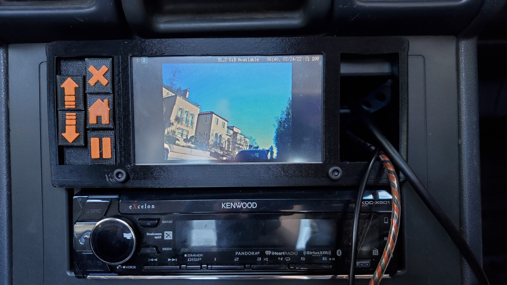
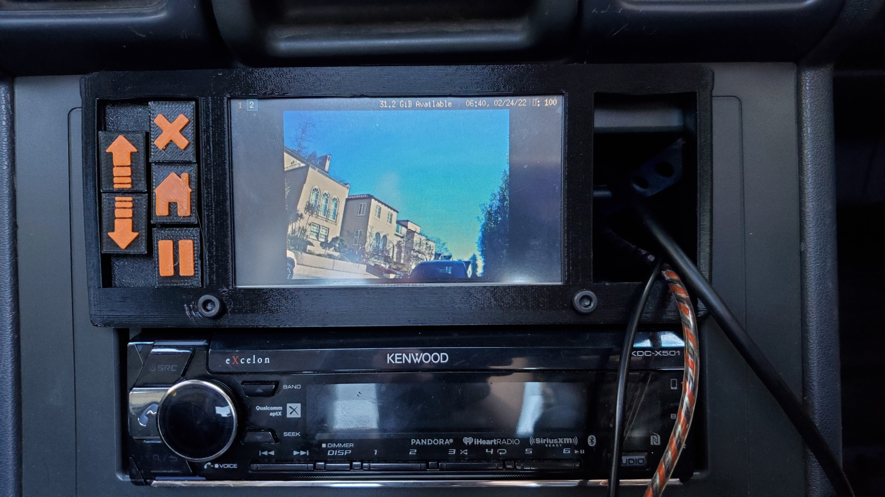

Car Computer
My newest project... Raspberry Pi in a car!. I know it's been done before but I wanted to take a shot at it using parts I already had. The car computer is made out of 3D printed parts and sits in the top portion of a double-DIN radio slot. To reduce complexity and cost, the car computer is simply connected to my exsisting aftermarket radio with an aux cable, meaning that I didn't have to re-implement features of a regular radio such as tuning or bluetooth calling. On the front is a 4.3" touchscreen salvaged from an old HP printer, two USB ports for adding music and debugging, and some buttons for navigation. Internally everything is powered by a Raspberry Pi 2 running linux with the i3 tiling window manager and a custom electron-based music player. In addition to playing music, the car computer is connected to a USB webcam via a very long extension cable to serve as a backup camera.
The Car Computer started out as just a screen, a Raspberry Pi, and a whole rat's nest of cables hanging off my desk while I proved that I could get a usable linux system running on such a small screen. Once I got my OS set up, I designed the entire car computer in a CAD program, a difficult task that involved multiple revisions to get the mounting positions just right so that it fits into the car. In particular, I had to move the Raspberry Pi up high to clear a metal tensioning strap mounted to the back of the radio. After I had printed all the parts and assembled the computer, I began working on the software. A quick python script utilizing the i3-ipc library allowed the buttons to control opening and closing windows. Unfortenately, I was unable to find a music player that worked well on such a small screen so I had to code one myself. For this I faced a difficult decision between using the familiar JavaScript programming language or the much faster Rust programming language. I eventually ended up using a combination of the two (rust for indexing songs, JS for playing songs and the interface) because JavaScipt was just too slow at indexing the music.
I learned a lot by completing this project, I have much more experience with NodeJS, and Electron, and I know have some basic knowlege of Rust. I also became much more familiar with linux tools like xrandr and mpv. Finally, I learned how to take apart the center console of my car which should come in handy when I try to fix the AC.